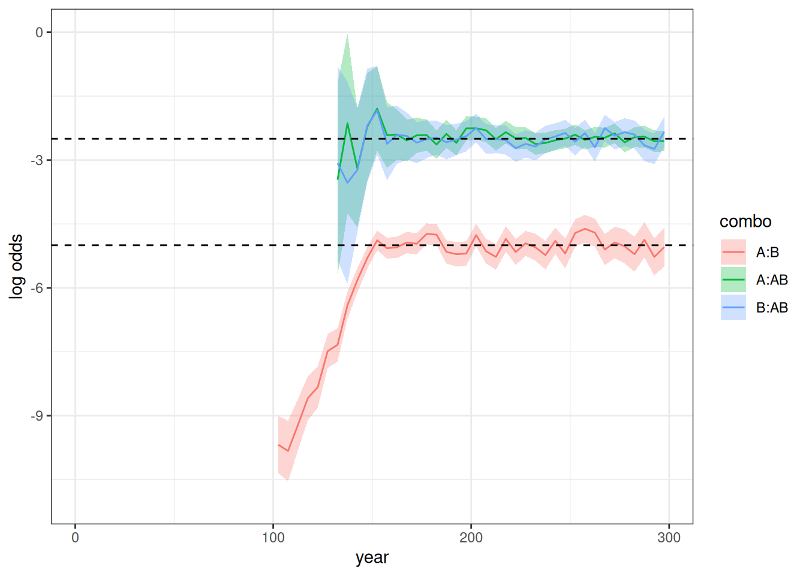
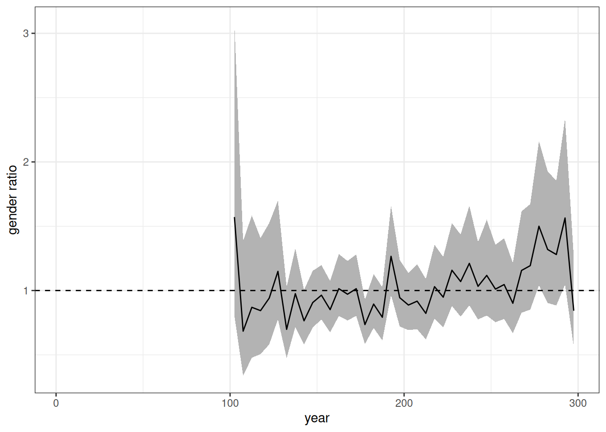
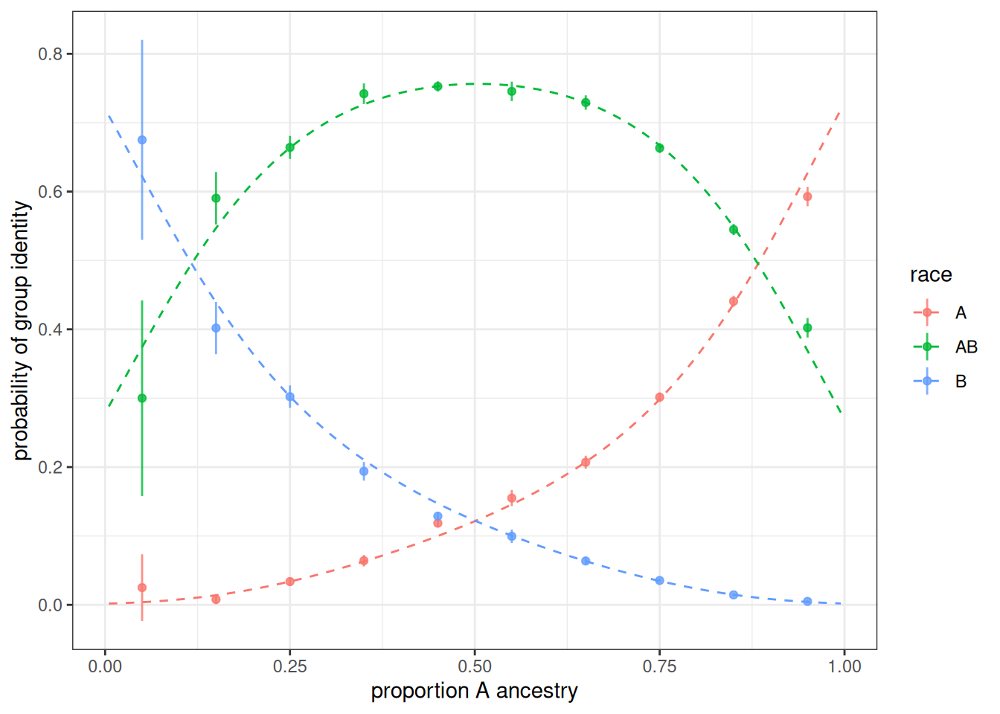

Our goal is replication of one of the simulations that Gullickson and Saperstein (2026) ran using SOCSIM. These simulations use an abstract two-group population (groups A and B) where group exogamy is allowed to grow over time and different rules are applied about how children with parents beloning to different groups are assigned a group membership. The inheritance rules allow for the emergence of an identified “mixed” AB population even as some individuals with mixed group ancestry re-identify with a single group.
Specifically, we will reproduce the simulation with an uneven starting group size, intermarriage trends that plateau after 50 years, and a “high resilient” inheritance pattern. Simulations will run for 200 years, after an initial 100 year burn-in period where no intermarriage is possible.
Gather Inputs
We will use static fertility and mortality rates from the USA in 2000. Union formation will use the “on demand” model, so we do not need to specify rates of marriage.
We also need to set up models of inheritance and group exogamy that can change over time. We can do this by setting up “list tibbles” with time_start and time_end columns to handle change over time.
For this simulation, we will include the burn-in period as part of the same simulation. So, for the first 100 years of the simulation, we will disallow group exogamy. We will then start with a very low group exogamy value of -5. The group exogamy value should produce a log-odds ratio of intermarriage double that size. So, a starting value of -5 corresponds to a log odds ratio of intermarriage of -10, which is similar to that observed historically between White and Black populations in the USA.
We then allow the absolute value of the group exogamy parameter to decline by 0.25 every five years until it stops declining after 50 years at a value of -2.5. It then holds constant at -2.5 for the remainder of the simulation.
We can set up a specific matching model for a given time period with the needed parameters by using age_gap_matching_model where we also apply a preferred two-year age gap between husbands and wives. To create time variation, we put all of our models into a list and then add it as a column of a tibble that contains the time_start and time_end columns.
m <- list(age_gap_matching_model(2, 5, group_exogamy = NA))
lodds <- -5
for (i in 1:11) {
m[[length(m) + 1L]] <- age_gap_matching_model(
2, 5,
group_exogamy = c("A:B" = lodds, "A:AB" = lodds / 2, "B:AB" = lodds / 2)
)
lodds <- lodds + 0.25
}
matching_models <- tibble(
time_start = c(0, seq(100, 150, 5)),
time_end = c(100, seq(105, 150, 5), 300),
model = m
)We can use the same approach to vary the inheritance models. In this case, we will just switch from a “random_parent” pre-defined model in the burn-in period to a custom inheritance model for the remainder of the simulation.
The custom inheritance approach here uses the same approach as Gullickson and Saperstein (2026). We allow for the possibility for children to identify as A, B, or AB. The probability is governed by a multinomial logit model with a single predictor variable given by the proportion of A ancestry that the child has. In the high resilient model we are using here, the probability of AB identification is maximized at around 70% when the child has 50% of their ancestry from either group. As ancestry moves in the direction favoring one group, the AB probability declines and the probability of identifying with the group with more shared ancestry increases.
inheritance_models <- tibble(
time_start = c(0, 100),
time_end = c(100, Inf),
model = list(
group_inheritance("random_parent"),
group_inheritance(
"custom",
fun = function(child_ancestry, mother_group, father_group, ...) {
# Same identity or missing father: follow mother
if (is.na(father_group) || mother_group == father_group) {
return(mother_group)
}
# Entirely unknown ancestry: follow mother
known <- 1 - child_ancestry[["unknown"]]
if (known <= 0) return(mother_group)
# if we are here then assign as a function of group A ancestry
prop_A <- child_ancestry[["A"]] / known
logits <- c(
A = -5.138 + 11.88 * prop_A - 15.3 * prop_A^2 + 9.553 * prop_A^3,
B = 0.949 - 9.39 * prop_A + 11.935 * prop_A^2 - 8.483 * prop_A^3,
AB = 0
)
weights <- exp(logits - max(logits))
sample(names(weights), size = 1, prob = weights)
}
)
)
)Run Simulation
We will use uneven starting groups of A (85%) and B (15%).
pop <- generate_uniform_population(
200000,
end_time = 0,
groups = list(race = c("A" = 0.85, "B" = 0.15))
)In this case, the 100 year run-in to produce a stable population is included already in the input objects. So, we just need to run the simulation for 300 years to produce the desired result. Note that because I set end_time = 0 in the baseline population, all of our time increments count up from zero.
model <- hammel_model() |>
set_population(pop) |>
set_mortality(usa_2000_mortality) |>
set_fertility(usa_2000_fertility) |>
set_groups(race = group(categories = c("A", "B", "AB"), ancestry = TRUE,
inheritance = inheritance_models)) |>
set_union_formation("on_demand", matching = matching_models)
runtime <- system.time(pop_final <- run_simulation(model, 300, 42))The simulation takes 52.568 seconds to run.
Analyze the Simulation Results
calculate_population_size(pop_final, seq(0, 300, 5), by = "race") |>
group_by(time) |>
mutate(prop = population / sum(population)) |>
ungroup() |>
mutate(race = factor(race, levels = c("A", "B", "AB"))) |>
ggplot(aes(x = time, y = prop, fill = race)) +
geom_area() +
labs(x = "year", y = "group share")Figure 1 shows the group shares over time. The AB group emerges after 100 years and grows to a larger share of the population over time.
crosstabs <- pop_final |>
augment_unions() |>
mutate(time_mid = floor(start_time / 5) * 5 + 2.5) |>
count(time_mid, race_w, race_h) |>
pivot_wider(names_from = c(race_w, race_h), values_from = n) |>
mutate(
log_odds_A_B = log(A_B) + log(B_A) - log(A_A) - log(B_B),
se_A_B = sqrt(1 / A_B + 1 / B_A + 1 / A_A + 1 / B_B),
log_odds_A_AB = log(A_AB) + log(AB_A) - log(A_A) - log(AB_AB),
se_A_AB = sqrt(1 / A_AB + 1 / B_AB + 1 / A_A + 1 / AB_AB),
log_odds_B_AB = log(B_AB) + log(AB_B) - log(B_B) - log(AB_AB),
se_B_AB = sqrt(1 / B_AB + 1 / AB_B + 1 / B_B + 1 / AB_AB)
)
crosstabs |>
select(time_mid, starts_with("log_odds"), starts_with("se_")) |>
pivot_longer(
cols = -time_mid,
names_to = c(".value", "combo"),
names_pattern = "(log_odds|se)_(.*)"
) |>
mutate(
combo = str_replace(combo, "_", ":"),
combo = factor(combo, levels = c("A:B", "A:AB", "B:AB"))
) |>
ggplot(aes(x = time_mid, y = log_odds, color = combo, group = combo)) +
geom_ribbon(
aes(ymin = log_odds - 1.96 * se, ymax = log_odds + 1.96 * se, fill = combo),
color = NA,
alpha = 0.3
) +
geom_line() +
geom_hline(yintercept = c(-5, -2.5), linetype = 2) +
scale_y_continuous(limits = c(0, -11)) +
labs(x = "year", y = "log odds")
Figure 2 shows the log odds ratios over time for the three combinations. No log odds ratios show for the first 100 years as expected because intermarriage was not allowed. When the log odds are very low or the groups are still very small (as for the AB group between 100 and 150 years), the log odds ratio can sometimes not be estimated due to zero values in one of the cells. Thus, log odds ratios don’t appear for combos involving the AB group for some time after year 100 because the group is so small and the first members of it must grow old enough to be able to partner up. The A:B log odds ratio behaves exactly as expected by the input exogamy ratios, starting at roughly -10 and plateauing at -5. The A:AB and B:AB log odds ratios are about half that throughout and stabilize at -2.5, as expected.
ratio <- pop_final |>
augment_unions() |>
mutate(time_mid = floor(start_time / 5) * 5 + 2.5) |>
count(time_mid, race_w, race_h) |>
pivot_wider(names_from = c(race_w, race_h), values_from = n) |>
mutate(
ratio_A_B = A_B / B_A,
se_log = sqrt(1 / A_B + 1 / B_A),
conf_lower = ratio_A_B * exp(-1.96 * se_log),
conf_upper = ratio_A_B * exp(1.96 * se_log)
)
ratio |>
ggplot(aes(x = time_mid, y = ratio_A_B)) +
geom_ribbon(
aes(ymin = conf_lower, ymax = conf_upper),
color = NA,
fill = "grey70"
) +
geom_line() +
geom_hline(yintercept = 1, linetype = 2) +
labs(x = "year", y = "gender ratio")
Figure 3 shows the gender ratio over time which should be held at roughly one throughout the simulation. This is generally true, except for the early period where the low rates lead to high volatility across samples.
temp <- tibble(
prop_A = seq(0.005, 0.995, 0.005),
logit_A = -5.138 + 11.88 * prop_A - 15.3 * prop_A^2 + 9.553 * prop_A^3,
logit_B = 0.949 - 9.39 * prop_A + 11.935 * prop_A^2 - 8.483 * prop_A^3,
denom = exp(logit_A) + exp(logit_B) + exp(0),
prob_A = exp(logit_A) / denom,
prob_B = exp(logit_B) / denom,
prob_AB = exp(0) / denom
) |>
select(prop_A, starts_with("prob_")) |>
pivot_longer(
cols = starts_with("prob_"),
names_prefix = "prob_",
names_to = "race",
values_to = "prop"
) |>
rename(prop_a_group = prop_A)
pop_final$persons |>
filter(birth_time >= 100) |>
left_join(select(pop_final$ancestry$race, person_id, A), by = "person_id") |>
left_join(
pop_final$persons |>
select(person_id, race) |>
rename(father_id = person_id, race_father = race),
by = "father_id"
) |>
left_join(
pop_final$persons |>
select(person_id, race) |>
rename(mother_id = person_id, race_mother = race),
by = "mother_id"
) |>
filter(!is.na(race_father) & !is.na(race_mother) &
race_father != race_mother) |>
mutate(
prop_a_group = cut(
A,
breaks = seq(0, 1, 0.1),
labels = FALSE,
include.lowest = TRUE
) * 0.1 - 0.05
) |>
group_by(prop_a_group, race) |>
summarize(n = n()) |>
mutate(prop = n / sum(n), se = sqrt(prop * (1 - prop) / sum(n))) |>
ungroup() |>
ggplot(aes(x = prop_a_group, y = prop, group = race, color = race)) +
geom_line(data = temp, linetype = 2) +
geom_point(alpha = 0.8) +
geom_linerange(aes(ymin = prop - 1.96 * se, ymax = prop + 1.96 * se),
alpha = 0.8) +
labs(x = "proportion A ancestry", y = "probability of group identity")
Figure 4 shows the observed probability of being assigned to a given group as a function of share of A ancestry for births to parents from different groups. The dotted line shows the expected probabilities from the model. The results line up closely to expectation and most 95% confidence intervals contain the expected value.
Add transition rates
To test time-varying transition rates, I add transition rates to the simulation where AB individuals have an equal rate of transitioning back to A or B with equal probability upon becoming adults. We will double that transition rate halfway through the latter 200 years of the simulation.
trans_rates <- tribble(
~time_start, ~time_end, ~origin, ~destination, ~age_start, ~age_end, ~rate,
0, 100, "AB", "B", 15, 20, 0.00,
0, 100, "AB", "A", 15, 20, 0.00,
100, 200, "AB", "B", 15, 20, 0.02,
100, 200, "AB", "A", 15, 20, 0.02,
200, 300, "AB", "B", 15, 20, 0.04,
200, 300, "AB", "A", 15, 20, 0.04
)
model <- hammel_model() |>
set_population(pop) |>
set_mortality(usa_2000_mortality) |>
set_fertility(usa_2000_fertility) |>
set_groups(race = group(categories = c("A", "B", "AB"), ancestry = TRUE,
inheritance = inheritance_models)) |>
set_union_formation("on_demand", matching = matching_models) |>
set_group_transition(trans_rates)
runtime <- system.time(pop_final <- run_simulation(model, 300, 42))
calculate_population_size(pop_final, seq(0, 300, 5), by = "race") |>
group_by(time) |>
mutate(prop = population / sum(population)) |>
ungroup() |>
mutate(race = factor(race, levels = c("A", "B", "AB"))) |>
ggplot(aes(x = time, y = prop, fill = race)) +
geom_area() +
labs(x = "year", y = "group share")Figure 5 shows the group share over time in the simulation with these transition rates. As expected, the growth of the AB group is slower than the previous simulation due to some transitions back into single group categories.
temp <- calculate_transition_rates(
pop_final,
time_breaks = c(0, 100, 200, 300),
age_breaks = c(15, 20),
conf_level = 0.95
) |>
filter(origin == "AB", age_start == 15) |>
select(time_start, time_end, age_start, age_end, origin, destination,
rate_transition, conf_low, conf_high) |>
left_join(trans_rates)
temp |>
gt() |>
cols_label(
time_start ~ "Starting time",
time_end ~ "Ending time",
age_start ~ "Age start",
age_end ~ "Age end",
origin ~ "Origin",
destination ~ "Destination",
rate_transition ~ "Observed rate",
conf_low ~ "Low",
conf_high ~ "High",
rate ~ "Input rate"
) |>
tab_spanner(starts_with("conf_"), label = "95% Confidence interval") |>
fmt_number(c(rate_transition, conf_low, conf_high), decimals = 4)| Starting time | Ending time | Age start | Age end | Origin | Destination | Observed rate |
95% Confidence interval
|
Input rate | |
|---|---|---|---|---|---|---|---|---|---|
| Low | High | ||||||||
| 0 | 100 | 15 | 20 | AB | A | NA | NA | NA | 0.00 |
| 100 | 200 | 15 | 20 | AB | A | 0.0204 | 0.0189 | 0.0220 | 0.02 |
| 200 | 300 | 15 | 20 | AB | A | 0.0393 | 0.0382 | 0.0404 | 0.04 |
| 0 | 100 | 15 | 20 | AB | B | NA | NA | NA | 0.00 |
| 100 | 200 | 15 | 20 | AB | B | 0.0202 | 0.0187 | 0.0218 | 0.02 |
| 200 | 300 | 15 | 20 | AB | B | 0.0404 | 0.0393 | 0.0416 | 0.04 |
Table 1 shows that the estimated transition rates are very close to the expected input transition rates.
References
Gullickson, Aaron, and Aliya Saperstein. 2026. “The Dynamics of Population Mixing: A Simulation Approach.” Population Association of America, St. Louis, MO, May 8.